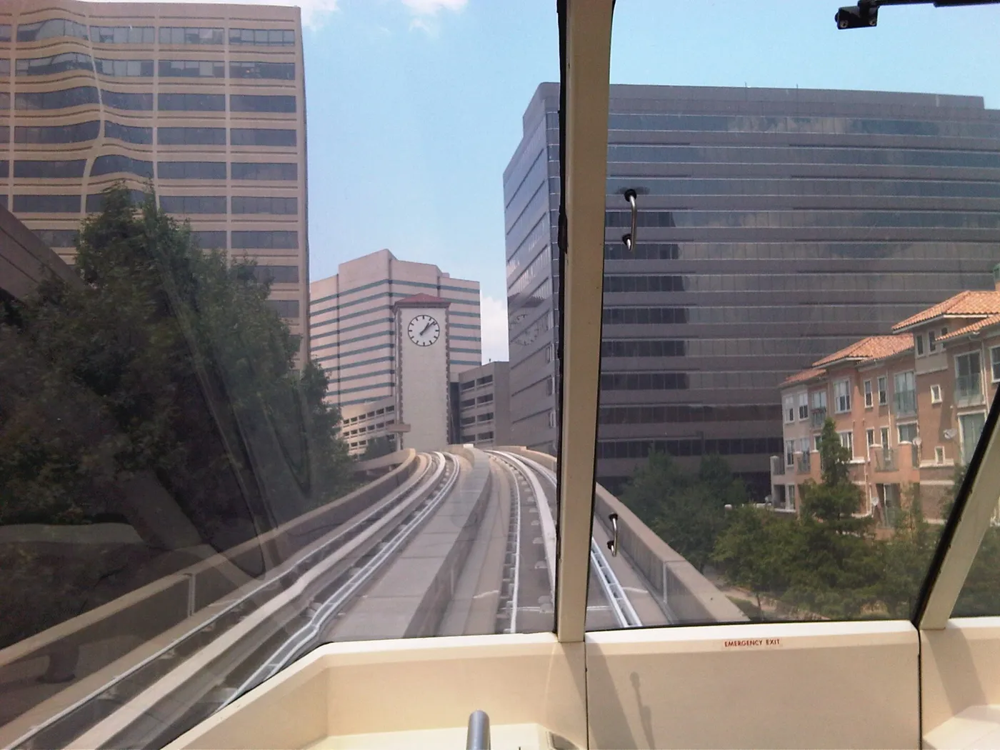
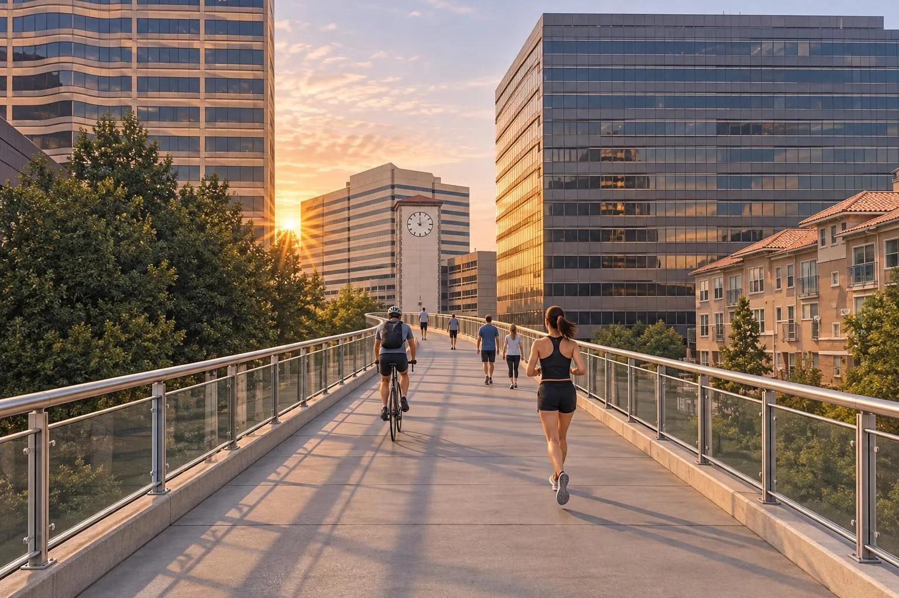
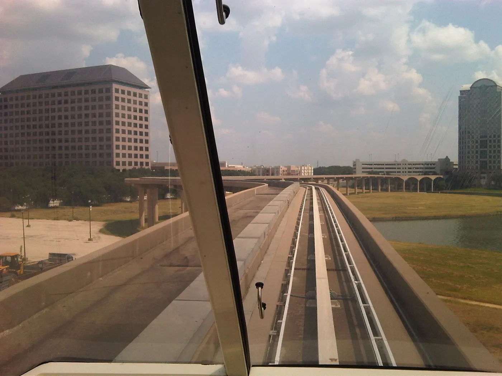

The vision
An urban lung above the street
Instead of expensive automation, Sky-Path relies on lightweight activation: people-first green space that ties the Urban Center's transit and leisure hubs together above surface traffic.
The 0.35-mile catalyst zone
- Node A: Tower 909 / DART Orange Line station
- Node B: Mandalay Canal / Bell Tower Plaza
- Integration: Lake Carolyn water taxi & promenade
- Transit link: pedestrian bridge to DART already exists at Tower 909



